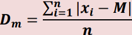
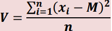
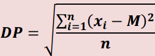
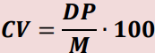

Estatística Básica
Medidas De Dispersão
As medidas de dispersão são cálculos realizados para verificar o grau de dispersão de certos dados numéricos.
1. Amplitude Total
A amplitudade total é a diferença entre o menor e o maior valor da série(grupo, conjuntos) de dados.
Exemplo: (disponibilizado em aula)
| Grupo A | 7 | 5 | 3 |
|---|---|---|---|
| Grupo B | 5 | 4 | 6 |
No grupo A, temos como maior elemento o número 7, enquanto como menor o número 3. Logo devemos substrair o maior pelo menor, ficando 7-3, com resultado igual a 4.
Já no grupo B, temos como maior o 6 e menor o 4. Ou seja, 6-4, com resultado igual a 2.
2. Desvio Médio
O desvio médio é a média da diferença entre cada elemento da série e a média dos valores, basicamente a soma de todos os números da conta, divididos pela quantidade dele.
Fórmula:
Como se tem módulo, não tem como dar um valor negativo, pois os valores de saida do módulo sempre vai ser positivo.
3. Variância
A variância é uma medida de dispersão que mostra o quão distante cada valor desse conjunto está do valor central. Eleva-se ao quadrado(^2) a diferença entre os valores e a média.
4. Desvio Padrão
É basicamente a raiz quadrada da variancia.
5. Coeficiente da Variação
Usa-se quando for preciso comparar grupos de dados de natureza diferente(Unidade é diferente, como peso e altura) ou que tenha médias diferentes.
Fórmula:
É o desvio padrão dividido pela massa. Após isso, você multiplica por 100 para que o resultado fique em porcentagem.
Observação: As imagens das fórmulas, foram retiradas do material desse conteúdo que está no Sigaa.